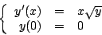
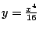
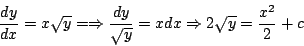
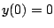
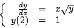
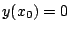
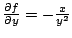
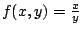

|
|
|
|
|Instituto Tecnológico de Costa Rica|Escuela de Matemática| M. Sc. Geovanni Figueroa M. |
|
|
Existencia y unicidad
Cuando un problema de valor inicial modela matemáticamente una situación física, la existencia y unicidad de la solución es de suma importancia, pues, con seguridad se espera tener una solución, debido a que físicamente algo debe suceder. Por otra parte, se supone que la solución sea única, pues si repetimos el experimento en condiciones idénticas, cabe esperar los mismos resultados, siempre y cuando el modelo sea determinístico. Por lo tanto, al considerar un problema de valor inicial es natural preguntarse por:
En ésta sección nos ocuparemos de las dos primeras interrogantes: existencia y unicidad y dejamos la determinación de solución para el próximo capítulo.
Ejemplo

no resulta difícil comprobar que  es solución, pues separando variables e integrando obtenemos que

Y usando la condición inicial  obtenemos que
Ejemplo:

tiene solución única, mientras que para los problemas en donde  el teorema no garantiza nada, es decir, podría suceder cualquier cosa: que no tenga solución, que tenga solución única o varias soluciones, como sucedió en el ejemplo anterior.
Ejemplo:
Hallar los valores de
tiene solución única.
Como la derivada parcial
 y
 son continua en todo punto
El teorema de existencia y unicidad nos da una condición suficiente. Por lo tanto el hecho de que no se cumplan las hipótesis no nos permite concluir nada. Por otro lado, aunque el teorema nos asegure la existencia no nos garantiza que exista un método para llegar a ella, quizás, lo mejor que podamos hacer sea aproximarla.
Subsecciones |